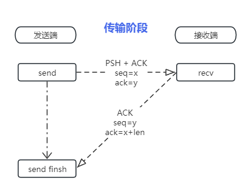
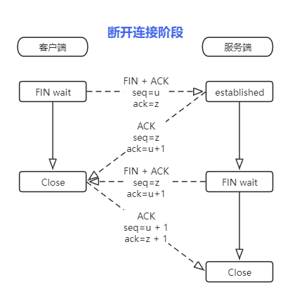

TCP
报文头

- 源端口：
- 长度：16bit
- 作用：用来确定是那个进程使用的tcp包，可以根据端口来确定发送进程。
- 目标端口：目标端口与源端口功能类似，用来表示对端。
- 序号：
- 长度：32bit
- 作用：在不通的阶段有不通的作用
- SYN握手阶段：初始化一个数字（通常为0）发送给对端，并逐次+=1
- PSH传输阶段：本包第一字节在所有数据中的序号。
- 确认号：
- 长度：32bit
- 作用：仅ACK的标志位为1的时候确认号才有效。确认号为期望对端的发送的手字节序号。
- 数据偏移：tcp头长度，也表示数据开始位置
- 长度：4bit
- 作用：结果需要乘4，则最小为固定长度20（tcp头固定长度），最大表示为|1111|*4=60(所以tcp头长度不能超过60)
- Flags：对应位为1则表示当前flag
- ns （Explicit Congestion Notification）显式拥塞通知
- cwr (Congestion Window Reduced) 拥塞窗口减少
- ece ECN-Echo
- urg 高优先级数据包
- ACK 确认序号
- PSH 传输数据
- RST 出现严重差错，要求断开或重连
- SYN 表示连接请求或连接接受报文
- fin 要求释放连接
- 窗口：表示从确认号开始，本报文的发送方可以接收的字节数，即接收窗口大小。用于流量控制。
- 校验和：
- 紧急指针：
- 可选项：一组和多组kind类数据
- 长度：数据偏移-20固定字节
- Kind
- 0x00: 结束选项列表
- 0x01: 无操作
- 0x02: Maximum segment size (最大分段大小)
- 0x03: 窗口扩大因子
- 0x04: 选择性确认(SACK)
- 0x05: 时间戳
握手

- 首先客户端发送握手请求（一个SYN包）到服务器。
- 服务器收到SYN包后会创建缓冲并将客户端发送SYN和ACK标志位的包表示同意连接。
- 客户端则再次回复ACK包通知服务器，至此tcp握手完成。
Q:
- 如果客户端发送SYN 服务器除了应答还会怎么处理呢？
- 不应答 会触发连接超时 开启防火墙通常就是不应答。
- 拒绝 直接回复RST包，直接进行拒绝 端口为监听。
- 如果客户端收到服务器的同意请求 如果不回复会怎么样？
- 这样会造成资源浪费，服务器会在回复同意后创建接收缓存。批量操作会造成 SYN泛洪攻击。
- 三次握手主要做了什么?
- 确定双全工通道通路正确，窗口初始化，MSS初始化。
传输阶段

- 发送方发送PSH+ACK的Payload包发送到接收端。
- 接受方收到后会回复一个ACK的包给发送方，告知已接收到数据。
- 发送方收到确认，再次发送下一包数据。
窗口确认 每次发送端的消息都有标注发送大小 序号 ，接收端收到后会回复 确认号 来确认收到。
重传策略 如果迟迟收不到接收端回复确认号，则会再次发送消息，来避免在复杂的环境丢包。
连接断开

- 关闭端发FIN包给接收端。
- 接收端回复应答FIN包。
- 应答端处理完成发送FIN包。
- 关闭端回复应答FIN包。